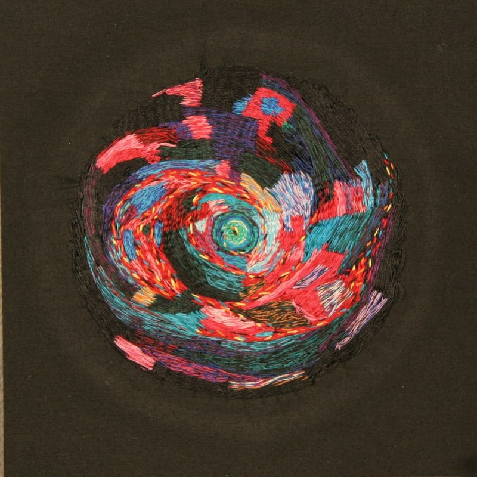

Jesi Evans
Fiber Artist
Connection - Body of Work
-

At First there is Movement
-

The Unknown Becomes the Known
~ photo credit to Sarah Katherine Davis Photography -

A Promise in the Void
~ photo credit to Sarah Katherine Davis Photography -

With Each Path Comes Knowledge
~ photo credit to Sarah Katherine Davis Photography -

A Chosen Path
Connection - Artist Statement
In my life I have desperately searched for connection. I strive to find a place for myself and to feel I serve a purpose. The concepts of identity, place and purpose inspire my work. In my art, I use the juxtaposition of the microcosm and macrocosm to symbolize the connection I seek between myself and my place in the world. The macrocosm is built up by innumerable parts, or microcosms; just as I am a small part of the grand scheme.
I use macrocosmic imagery to depict what I strive to be connected to. Images of the cosmos are universal and are often associated with the divine, or a higher purpose. This higher purpose is what I seek.
The small scale of the works and the minute detail found in each piece depicts the microcosm, which I use to symbolize myself. I am the microcosm or a small part of the whole. By creating a macrocosm on a microcosmic scale, I have helped to bring the macrocosm to the viewer. They too can more easily connect to the macrocosm by coming close and sharing personal space with my work.
I use the fiber medium as it is important to me for its many techniques that incorporate intense use of the hand. The idea of the handmade is important to me because it allows me to feel more connected to my work. The more personal time I spend with the piece, the more I grow, learn and understand the concept of connection behind it; and the importance connection plays in my life.
At this point in my life, I have come to a crossroads where I am facing a future brimming with the unknown. With the future looming near, I have begun to wonder how I fit in. I want to know what purpose I serve in the grand scheme. I want to know, certainly, that I am connected to something worthwhile. Although this idea comes from my personal sphere of experience I feel it is a universal one.